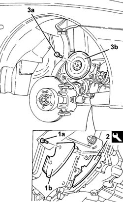

1092A10 Auxiliary shaft pulley - R.R.
- Path
- Procedures > 10 ENGINE > 1092 engine component miscellaneous drives > 1092A CRANKSHAFT PULLEY AND IDLER PULLIES > 1092A10 Auxiliary shaft pulley - R.R.
- Kind
- repair procedure (removal / refitting; the operation number is the code)
- Applies to
- engines: 2.4 JTD 10V; all production periods
- Interactive page
- https://sloeber94.github.io/elrnDB-lThss/en/#/76247
Applies to: all engines; all production periods
 Removing
Removing
 Refitting
Refitting- Position the vehicle on a lift.
See in Op. 7055B54 PROTECTION/GUARD under engine - R.R.
See in Op. 4450B04 Right FRONT WHEEL (one) - R.R.
See in Op. 7055B42 FRONT WHEEL ARCH LINER (one), left or right - R.R.
See in Op. 7055B64 Engine compartment DUST SEAL in front wheel arch (one), left or right - R.R.
See in Op. 1092G10
1. Undo the bolts (1a) and remove the lower flywheel guard (1b).
2. Fit the flywheel lock.
 | Description | Code | Function |
|---|---|---|---|
2 | Counter-torque | 1.860.898.000 | Locking crankshaft pulley rotation |
3. Undo the fixing bolts (3a) and remove the auxiliary shaft drive pulley (3b).

Applies to: all engines; all production periods
Refitting
Removing- Fit the auxiliary shaft drive pulley.
- Tighten the bolts fixing the crankshaft pulley to torque.
 | Value - daNm | Fastening | Component | Ø |
|---|---|---|---|---|
. | 2.5 | Bolt | CRANKSHAFT PULLEY | M8 |
- Remove the flywheel lock.
| Description | Code | Function |
|---|---|---|---|
. | Counter-torque | 1.860.898.000 | Locking crankshaft pulley rotation |
- Fit the lower flywheel guard.
See in Op. 1092G10
See in Op. 7055B64 Engine compartment DUST SEAL in front wheel arch (one), left or right - R.R.
See in Op. 7055B42 FRONT WHEEL ARCH LINER (one), left or right - R.R.
See in Op. 4450B04 Right FRONT WHEEL (one) - R.R.
See in Op. 7055B54 PROTECTION/GUARD under engine - R.R.
- Remove the vehicle from the lift.
Topics linked from this page (4)
- 4450B04 Right FRONT WHEEL (one) - R.R.
- 7055B42 FRONT WHEEL ARCH LINER (one), left or right - R.R.
- 7055B54 PROTECTION/GUARD under engine - R.R.
- 7055B64 Engine compartment DUST SEAL in front wheel arch (one), left or right - R.R.